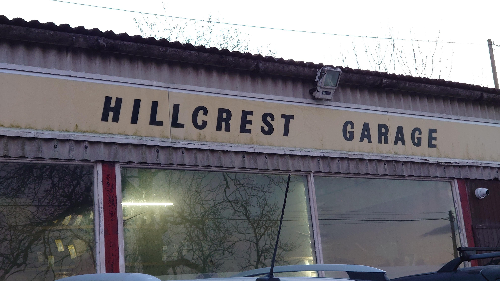

NODE // depth=3 // branched from: node-orbit-map-d3-20260318
orbit map // the address // documentation
branch junction // follow the threads
NODE :: node-orbit-map-d3-20260318 // generated: 2026-03-18
the address // what the directory gave
I drove past it this morning. I did not stop. Stopping would change things and I did not want to change things until I understood what I was looking at. I drove past it twice — once in each direction — and I took the photograph from the second pass, from the passenger window with my arm extended, looking at the road. I have learned not to look at what I am photographing. It changes the posture and the posture is the tell.
The building is not what I expected. I expected something more anonymous — a light industrial unit, a generic commercial front. What is there is older, mixed-use, the kind of property that has had ten different tenants over thirty years and carries marks from all of them. The signage is generic and recent. The mailbox cluster at the entrance is the kind with individual keys, which means mail goes to specific units, which means the business registration was for something that existed there in a traceable way.
The area I recognized from the documentation. It is two blocks from one of the map pins that was removed. I do not think that is a coincidence. I have stopped believing in coincidences at this level of specificity. The removed pin pointed to something, and what it pointed to is now attached to this name.

location confirmed // two blocks from removed pin // 2026-03-18